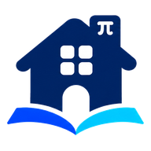

MPI · Gim Edukasi · Lab Maya
Rumahnya matematika yang bisa dimainkan.
Media pembelajaran interaktif, gim edukasi, dan lab maya untuk Fase A sampai F. Siap tayang di proyektor kelas, ringan dibuka di HP, tanpa perlu login.
Tiga kamar
Pilih cara belajarnya
Isi rumah
Karya terbaru

Aplikasi Rumatika
Pasang di HP dan laptop, dapat kabar setiap ada karya baru
Rumatika bisa dipasang seperti aplikasi: ikonnya ada di layar utama HP atau di desktop laptop, sekali ketuk langsung terbuka. Nyalakan notifikasi agar Anda tahu setiap ada MPI, gim, lab maya, video, atau artikel baru. Gratis, tanpa Play Store, tanpa login.
Di iPhone atau iPad: buka situs ini di Safari, ketuk tombol Bagikan (kotak dengan panah ke atas), lalu pilih Tambahkan ke Layar Utama. Setelah itu buka Rumatika dari layar utama untuk menyalakan notifikasi.
Teras Trik
Tips dan trik dalam 90 detik
Pojok Baca
Bacaan singkat untuk guru dan siswa
Semua karya
Semua karya Rumatika
Saring menurut fase, jenis, atau cari topik yang sedang Anda ajarkan.
Belum ada karya yang cocok
Coba hapus kata pencarian atau pilih "Semua" pada saringan.
Ruang Fase A
SD Kelas 1–2
Ruang ini sedang ditata
Karya pertama untuk fase ini sedang disiapkan. Sementara itu, tonton video di Teras Trik.
Ke Teras TrikTeras Trik
Video motion tips dan trik matematika
Satu konsep, 60–90 detik. Setiap video menautkan ke satu karya untuk latihan lanjutan.
Belum ada video untuk fase ini
Video baru tayang di kanal YouTube @yunascp.
Panduan Guru
Memakai Rumatika di kelas
Empat langkah dari memilih karya sampai membagikannya ke siswa.
-
Pilih ruang fase
Buka denah di beranda, lalu klik ruang sesuai kelas yang Anda ajar. Saring dengan Kamar Belajar, Kamar Main, atau Laboratorium.
-
Coba dulu di laptop
Buka karya dan klik Mainkan sekali sebelum kelas dimulai, supaya semua aset sudah termuat.
-
Tayangkan dengan Mode Proyektor
Klik Mode Proyektor untuk layar penuh 16:9. Tekan Esc untuk kembali.
-
Bagikan ke siswa
Klik Salin tautan di halaman karya, lalu kirim ke grup kelas. Siswa membukanya langsung di HP, tanpa akun.
Tentang
Tentang Rumatika
Rumatika adalah rumah bagi media pembelajaran matematika interaktif yang saya buat dan pakai sendiri di kelas.
Setiap karya dibangun dengan NI Engine, kerangka yang sama untuk MPI, gim, dan lab maya. Hasilnya seragam, ringan, dan bisa dibuka tanpa login, baik di proyektor kelas maupun di HP siswa.
Isinya disusun per fase Kurikulum Merdeka, dari Fase A di SD sampai Fase F di SMA, ditambah video singkat di Teras Trik untuk konsep yang sering membuat siswa bertanya "kenapa begitu?".
Kontak
Hubungi Founder Rumatika
Pilih keperluan, tulis pesan singkat, lalu kirim lewat WhatsApp atau email. Pesan langsung sampai ke Yunas Chandra Perdana, M.Pd.